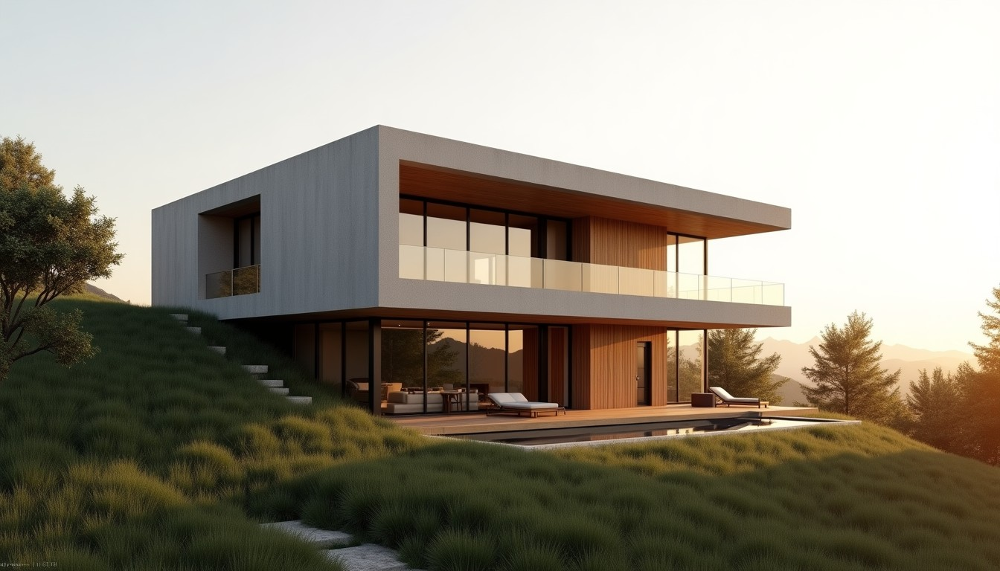
Mimari proje, ruhsat süreci, iç mimari ve uygulama; tek ekip, tek muhatap. Projenizin süresini aşağıda hemen planlayın.Architectural design, permits, interiors and construction; one team, one point of contact. Plan your project timeline below.
Projemi planlaPlan my project Keşif randevusuBook a site visitKonut, ofis, iç mimari ve restorasyon. Görsele dokunun, büyük açılsın.Residential, office, interiors and restoration. Tap an image to enlarge.
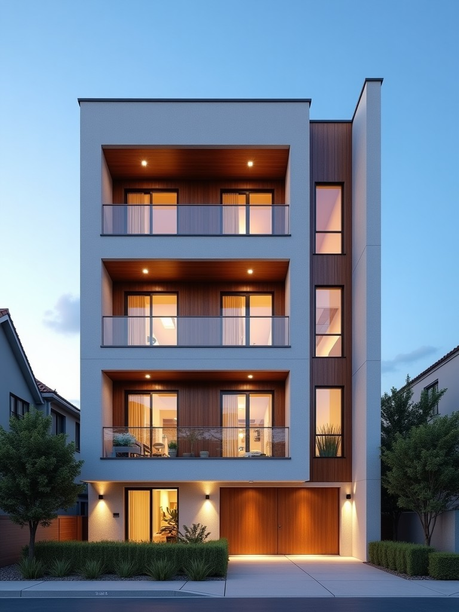
Konut · Apartman · Ankara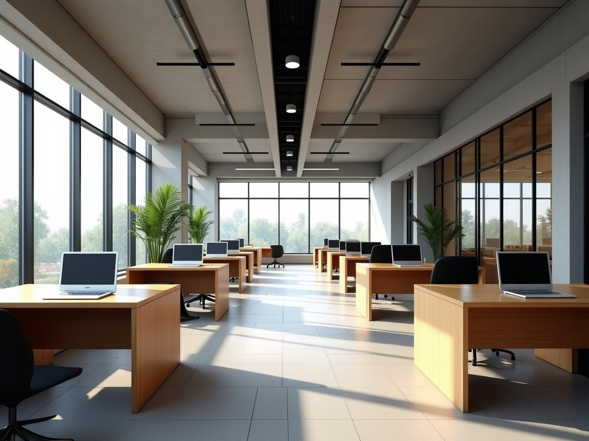
Ofis / Ticari · Tasarım ofisi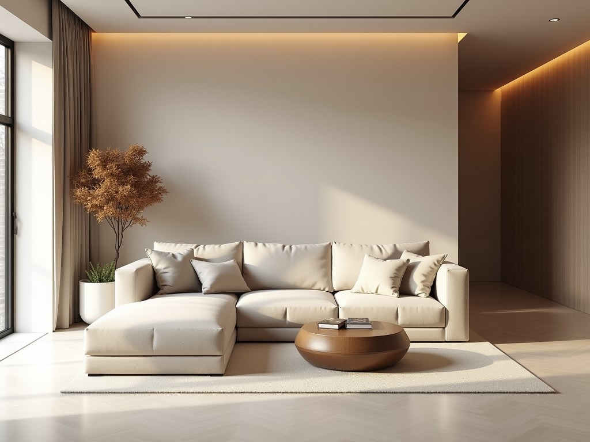
İç Mimari · Salon tasarımı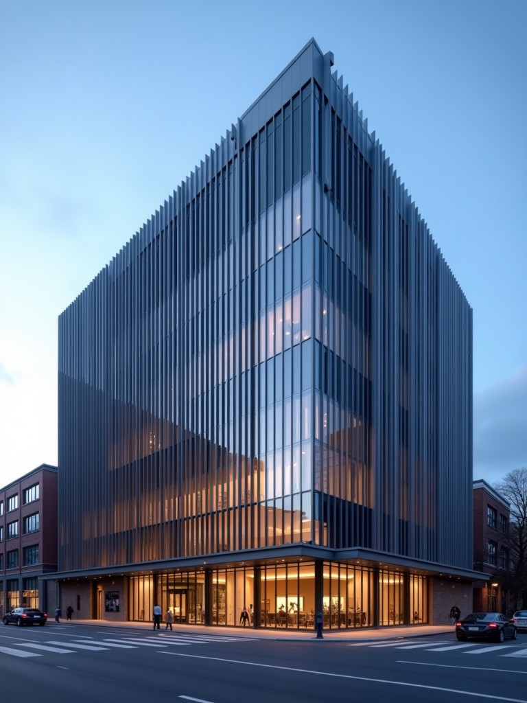
Ofis / Ticari · Ticari yapı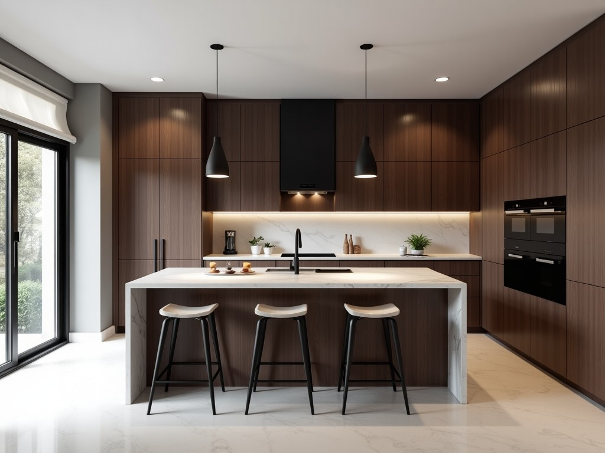
İç Mimari · Mutfak tasarımı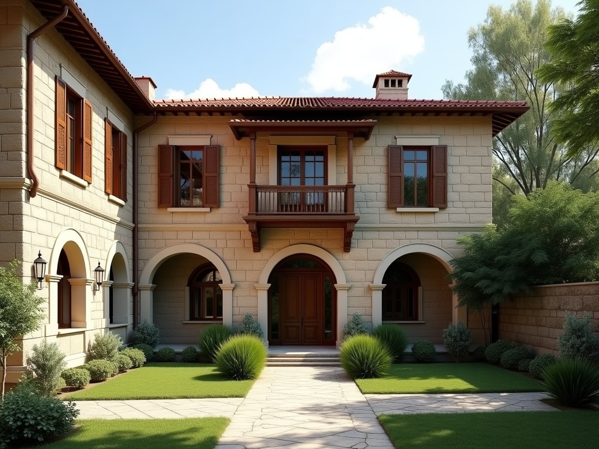
Restorasyon · Taş ev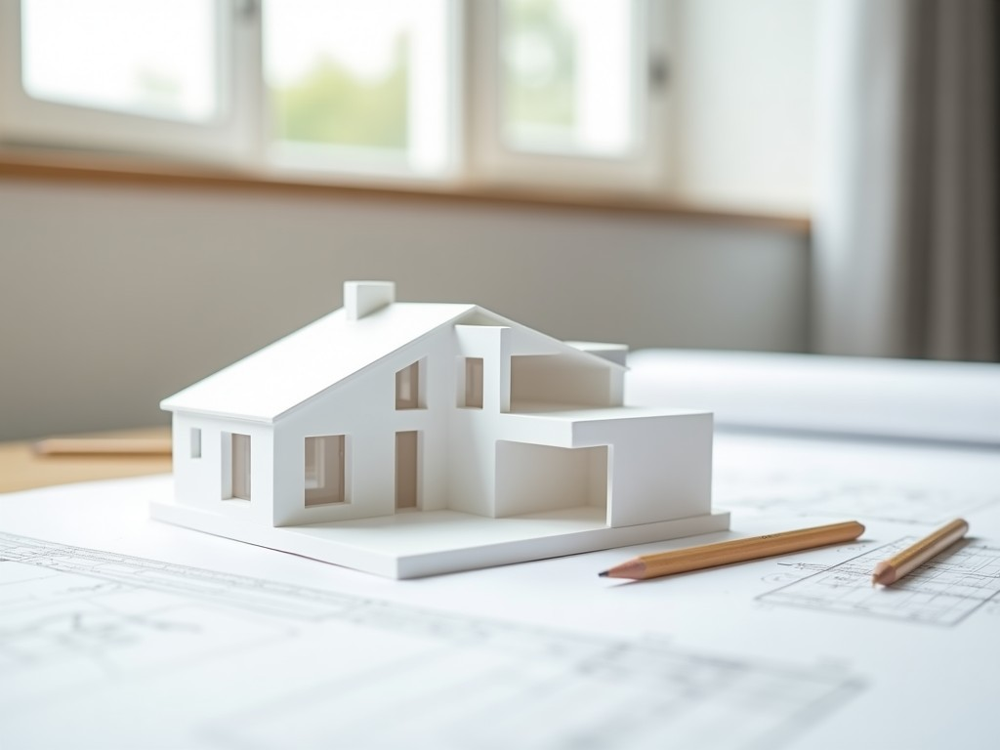
Konut · Konsept maketTaslaktaki görseller örnektir; yayında sizin projelerinizle değişir.Images in this draft are placeholders; they'll be replaced with your projects.
Çizgiyi sürükleyin: eski bina ve yenilenmiş cephe tasarımı. Kentsel dönüşüm ve cephe projelerinde müşteriye en çok bunu gösterin.Drag the line: existing building vs. renovated facade design.
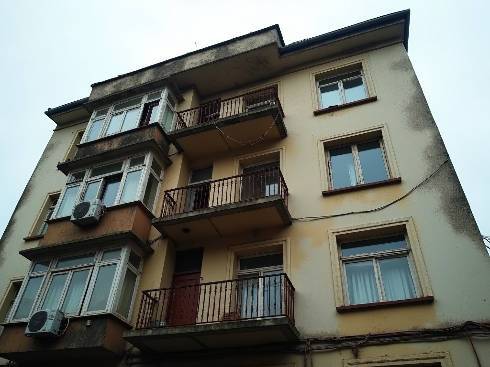
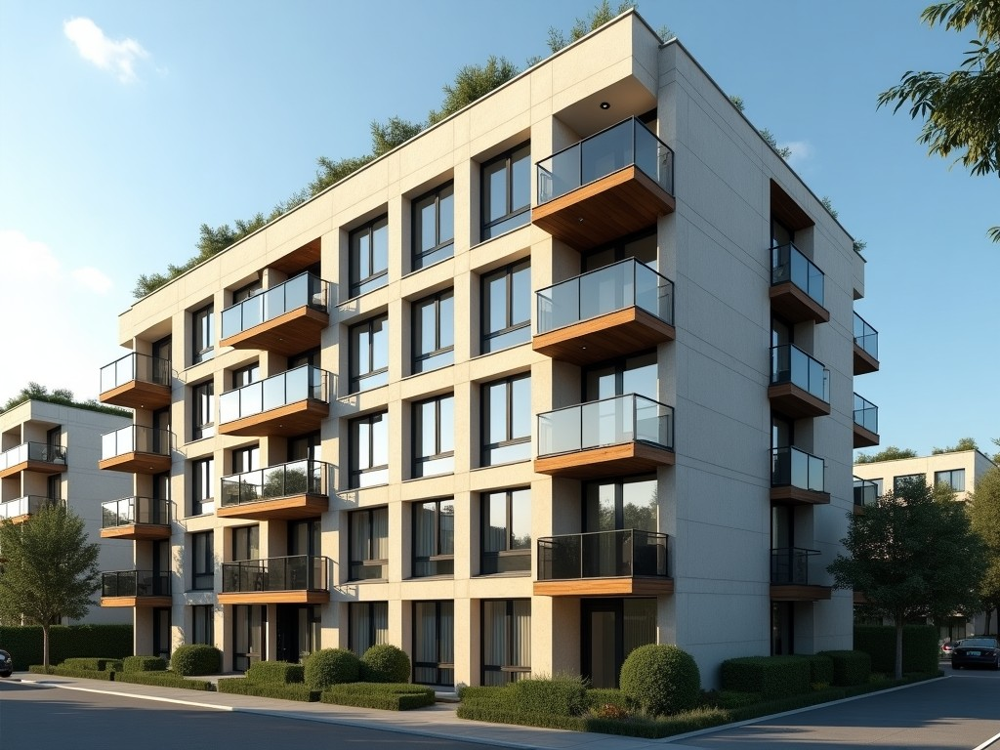
ÖNCEBEFORESONRAAFTERProjenizin türünü ve büyüklüğünü seçin; rölöveden ruhsata kadar tahmini takviminiz aşama aşama çıksın.Choose type and size; get an estimated, phase-by-phase timeline.
Tahminidir; arsa, belediye ve onay süreçlerine göre değişir. Kesin takvim keşiften sonra verilir.Estimate only; varies with site and municipality approvals.
Bu planı WhatsApp'tan gönderSend this plan via WhatsAppElinizde olanları işaretleyin; eksikleri tek tıkla bize sorun. Belediyeye göre farklılık gösterebilir.Tick what you have; ask us about the rest.
Henüz işaretlemediniz.Nothing ticked yet.
Eksiklerimi sorAsk about missing itemsHer müşteriye bir proje kodu verilir; hangi aşamada olduğunuzu, son paftaları ve sıradaki toplantıyı telefonunuzdan görürsünüz. Denemek için kod: BNL-2481Each client gets a code to follow their project. Try: BNL-2481
Kodu girin.Enter your code.
Bir stil seçin; renk paleti ve önerilen malzemeler çıksın. Beğendiğinizi toplantıya getirelim.Choose a style to see palette and materials.
Arsa/mekân, ihtiyaç ve bütçe görüşmesi.
Eskiz, 3B görsel ve avan proje.
Uygulama projesi ve disiplin koordinasyonu.
Belediye süreçlerinin takibi.
Şantiye ve iç mimari uygulama denetimi.
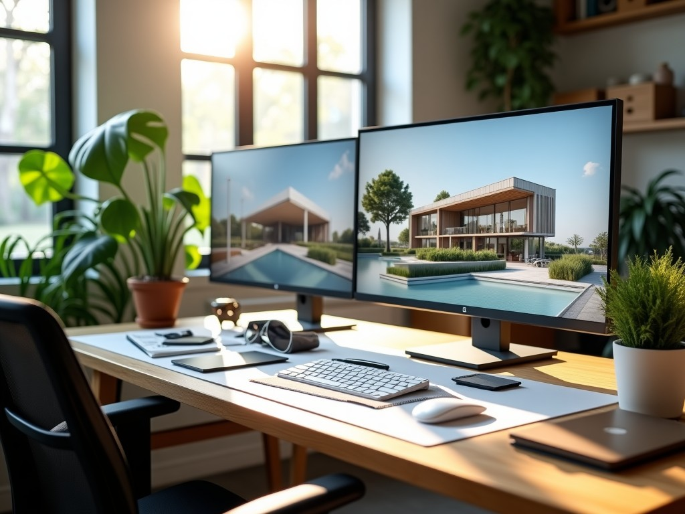
Kurucu Mimar · BNL Mimarlık
Mimar ve mühendislerden oluşan ekibimizle her projeyi müşterinin ihtiyacını anlayarak başlatıyoruz: tasarım, proje, uygulama ve danışmanlık tek çatı altında.Architects and engineers delivering design, documentation, construction and consultancy under one roof.
Yapının türü, alanı ve istediğiniz hizmet kapsamına göre. Keşif görüşmesinden sonra kalem kalem yazılı teklif veriyoruz.
Evet; belge hazırlığından belediye başvurusuna kadar süreci takip ediyoruz. Belediyeye göre süreler değişebilir.
Evet; konut, ofis ve ticari mekânlarda iç mimari tasarım ve uygulama yapıyoruz.
Evet, projeye göre değerlendiriyoruz. Ön görüşmeyi çevrim içi yapabiliriz.